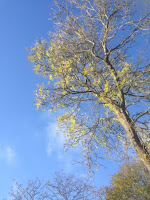
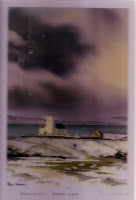

(I did realise there was a US Presidential election happening as I wrote this but found nothing that I wanted to say. Perhaps, this morning, all I can do is re-direct everyone to Jan Needle's recent post The Rise of Ronald T Rump then go back to seeking solace from the trees. It's not enough of course.)
It’s November and the clocks have gone back and the nights
are closing in and we’re heading into the dark time of the year. Every evening
at five o clock Mum’s confusion intensifies and her mood plummets. You might
think it couldn’t get much worse when most mornings she wakes lost and bewildered,
resentful that she’s still alive. But it does: in the mornings I can find
things to do (if she can summon the energy to do them) -- a walk or
a poem or a song. By early evening the last
of her brain is tired and, when the light from the outside world is gone, even crooning
a hymn often becomes too hard. Then she has no idea where she is or why she’s
been abandoned in this strange new place.
 |
| "Even oldies can still have this" |
{kind=link}
I look back to last November when I could still drag her up
the river wall to Goldenray
to try and lift from her desperation (and when I began writing Beloved Old Age, to lift me out of mine) and I remember all the Novembers for the
last five years, since November 2011 when Francis had his first back operation
and I shattered my leg and we were laid up in bed in Essex while she, unreachable
in Woodbridge, began breaking the backs of her books and arranging knives
around her flat in bizarre signals of paranoia. I’m probably glad I can remember that grim time
because it reminds me what a blessing it is that she now lives 15 minutes not
55 miles away. I can’t take her to the river or the boats any more but at least
I can be with her every morning and every evening in an attempt to offer
companionship.
| Dottie the helper |
{kind=link}
Dottie doesn’t try to reason or explain. She doesn’t use difficult words (“Tupperti? I don’t know what you mean. What is this muck they want me to drink?”). Instead she hops neatly onto the sofa, curls herself against Mum's side (it’s a good thing Dottie was brought up by cats) and asks to be stroked. She thumps her tail randomly or gazes with her rich brown spaniel’s eyes as Mum confides her plans for both of them to run away, run away, run away… Pity, love and yearning are the feelings Dottie evokes and it’s a bad day indeed when she is ignored.
Remember remember, it’s November. The fireworks that sound
like battle noise were blessedly distant this year but next weekend we must navigate the annual trauma of Remembrance Sunday. Among the many private
resolutions I made last year was No More Parades: no war memorial services,
no rockets cracking in the sky to mark the beginning and end of the two minutes
silence, no more Last Posts, possibly no poppies. We will go
to church quietly, safe amongst our new country congregation and there’ll be none of the panoply of battle-field death. There were soldiers in Woodbridge, banners and bugles ... Mum doesn’t talk about The War so often now and it may be that those memories are finally shrouded -- but I won't be taking the risk.
 |
| A picture given me by Theresa Clarke (not a good reproduction) |
{kind=link}
“Make the most / Of that time / Savour those bright / With-it moments / When love and gaiety / Are to the fore / And be there when / The enclosing darkness / Draws ever closer.”
That's a verse from a poem which Theresa sent me to share with Mum. But I was the one who needed the advice. The dead weight of all those other Novembers -- which I can remember and Mum can not -- was overwhelming me,
not her. We were shuffling miserably through our morning walk, when she looked up to bright leaves against the clear sky and said "even oldies can still have this." The place where she lives now IS beautiful - it's not the beauty of the river and the sea but a cultivated beauty of park and lake and wide fields beyond. She is surrounded by trees who live beyond our human scale. They will shed their leaves, stand stark against the bleak cold and bud back in the spring. That's what I need to keep in mind.
{kind=link}
{kind=link}